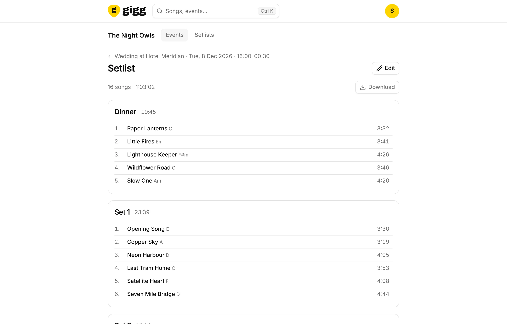
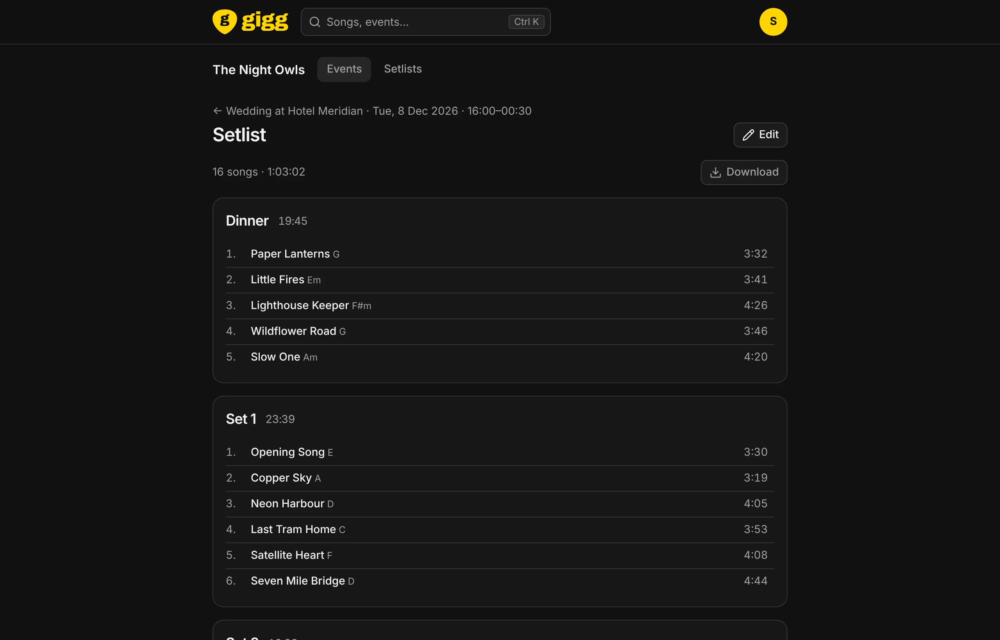
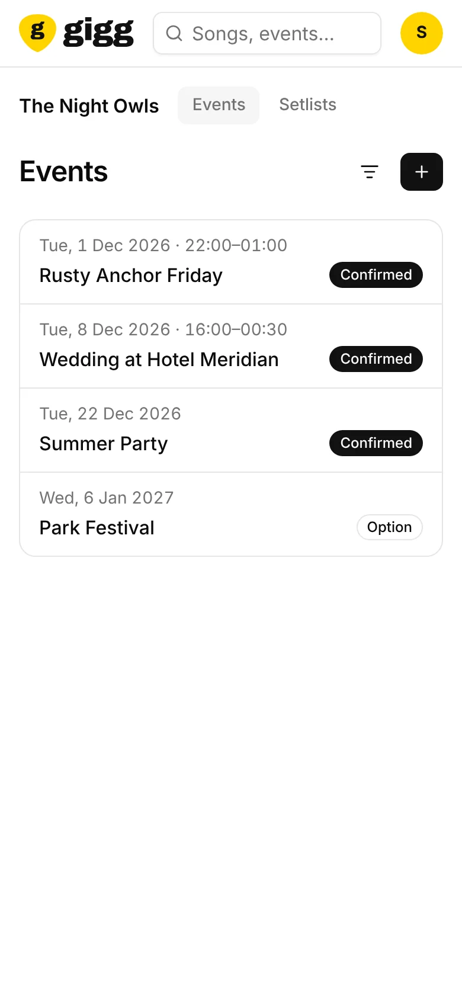

Gigg · v1 · gigg.band
The band's rider for everything off stage.
Gigs, availability, songs and setlists in one shared place. Built with the same care as a good input list: everything labelled, nothing lost, readable in the dark.




Input list
Everything plugged in
Channel by channel, what Gigg handles for your band.
| CH | Source | What it does | Where |
|---|---|---|---|
| 01 | Events | Date, times, venue, contacts, notes and tags. An end before the start means after midnight. | Events |
| 02 | Booking & payment | Lead → option → confirmed (or cancelled). Open → invoiced → paid (or free), with the fee as free text. | Event → Edit |
| 03 | Availability | Ask the band by email. Yes, maybe (with a reason) or no, answered without logging in. Re-ask when the date moves. | Event → Participants |
| 04 | Calendar feed | Your gigs in Google or Apple Calendar. | Settings → Calendar |
| 05 | Songs | Title, duration, key, BPM, tuning, notes, lyrics, tags, plus your own fields. | Songs |
| 06 | Files | Charts, recordings, contracts and riders on a song or gig, up to 100 MB each. | Song / Event page |
| 07 | Setlists | Sets, songs and reusable blocks. Running time adds up; duplicates get flagged; every change saves at once. | Event → Setlist |
| 08 | Show mode | The set full-screen in big type, one set per screen. Swipe for the next. Screen stays on. | Setlist → Show |
| 09 | Lyrics mode | One song per screen with its lyrics. | Setlist → Show (lyrics) |
| 10 | One A4 page per set for the stage floor, black on white. | Setlist → Print | |
| 11 | Offline | Upcoming gigs and setlists are saved to the phone automatically. Read-only without a signal. | Automatic |
| 12 | Search | Songs, events, venues and contacts. Forgives typos. | Top bar · Ctrl K |
House rules
How Gigg is built
Archive
Never delete
Every record can be archived and restored. Every change is logged: who, what, and what it was before.
Roles
Two of them
A member changes everything and invites others. A reader can only look. No band admins.
Sign-in
No passwords
An email link or a passkey. Answering availability needs neither.
Hosting
Yours to run
No band specifics in the code. gigg.band is just one instance.
Self-host
Your own Gigg on Vercel
Free tiers should be enough for a single band.
- Fork the repo and import it in Vercel.
- Add a Postgres database, for example Neon from the Vercel marketplace. It sets
DATABASE_URL. - Add a Blob store for file uploads. It sets
BLOB_READ_WRITE_TOKEN. - Set the other variables from
.env.example. Email goes through a free Resend account. - Run
pnpm db:migrateagainst the database, then deploy. - Sign in with an email from
ADMIN_EMAILSand create your band.
# Try it locally first. No accounts or database needed. $ git clone https://github.com/melvinvermeer/gigg $ cd gigg $ pnpm install $ pnpm dev # → http://localhost:3000 # Postgres runs in WASM, seeded with a demo band. # Sign in as member@example.com; the link is # printed in the console.